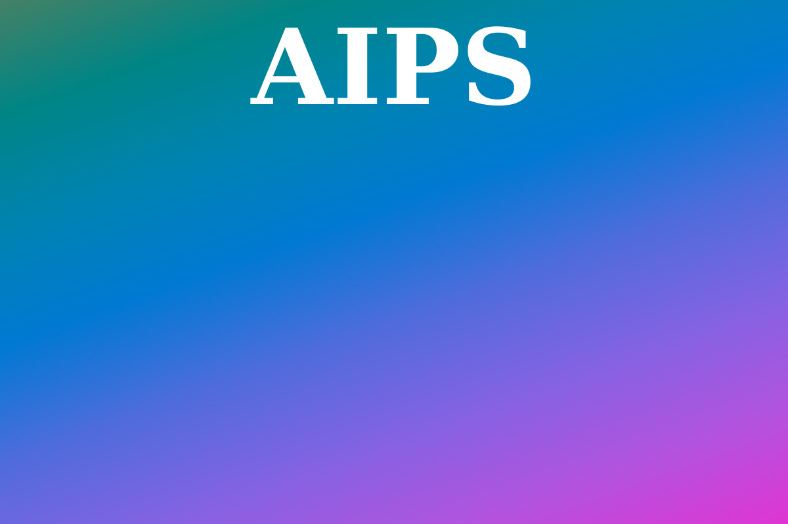

Generated by LazyRecon on Tue May 21 07:10:55 EDT 2019
Port 80 Port 443 
; <<>> DiG 9.11.4-2-Debian <<>> aips.seek.com.au ;; global options: +cmd ;; Got answer: ;; ->>HEADER<<- opcode: QUERY, status: NOERROR, id: 44853 ;; flags: qr rd ra; QUERY: 1, ANSWER: 4, AUTHORITY: 0, ADDITIONAL: 1 ;; OPT PSEUDOSECTION: ; EDNS: version: 0, flags:; MBZ: 0x0005, udp: 512 ;; QUESTION SECTION: ;aips.seek.com.au. IN A ;; ANSWER SECTION: aips.seek.com.au. 5 IN A 54.182.0.62 aips.seek.com.au. 5 IN A 54.182.0.196 aips.seek.com.au. 5 IN A 54.182.0.211 aips.seek.com.au. 5 IN A 54.182.0.57 ;; Query time: 205 msec ;; SERVER: 192.168.58.2#53(192.168.58.2) ;; WHEN: Tue May 21 07:10:56 EDT 2019 ;; MSG SIZE rcvd: 109
aips.seek.com.au has address 54.182.0.57 aips.seek.com.au has address 54.182.0.211 aips.seek.com.au has address 54.182.0.196 aips.seek.com.au has address 54.182.0.62
HTTP/1.1 200 OK Content-Type: text/html Content-Length: 329 Connection: keep-alive Date: Tue, 21 May 2019 03:56:44 GMT Last-Modified: Tue, 04 Sep 2018 00:26:16 GMT ETag: "73a43d7fdde4d078925ea239698fddf5" Accept-Ranges: bytes Server: AmazonS3 Age: 26054 X-Cache: Error from cloudfront Via: 1.1 61816bd5b3c56362c24a2d53889eede0.cloudfront.net (CloudFront) X-Amz-Cf-Id: Jkbyp0634t-9CviHBP8-1UcY-WexZwfn5Qm1votHlpa0CsmEDcrwuw==
nmap -sV -T3 -Pn -p3868,3366,8443,8080,9443,9091,3000,8000,5900,8081,6000,10000,8181,3306,5000,4000,8888,5432,15672,9999,161,4044,7077,4040,9000,8089,443,7447,7080,8880,8983,5673,7443 Starting Nmap 7.70 ( https://nmap.org ) at 2019-05-21 07:10 EDT Nmap scan report for aips.seek.com.au (54.182.0.196) Host is up (0.076s latency). Other addresses for aips.seek.com.au (not scanned): 54.182.0.62 54.182.0.57 54.182.0.211 rDNS record for 54.182.0.196: server-54-182-0-196.hkg51.r.cloudfront.net Not shown: 32 filtered ports PORT STATE SERVICE VERSION 443/tcp open ssl/http Amazon CloudFront httpd Service detection performed. Please report any incorrect results at https://nmap.org/submit/ . Nmap done: 1 IP address (1 host up) scanned in 17.50 seconds